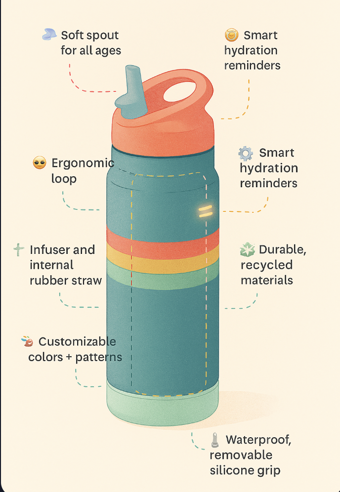
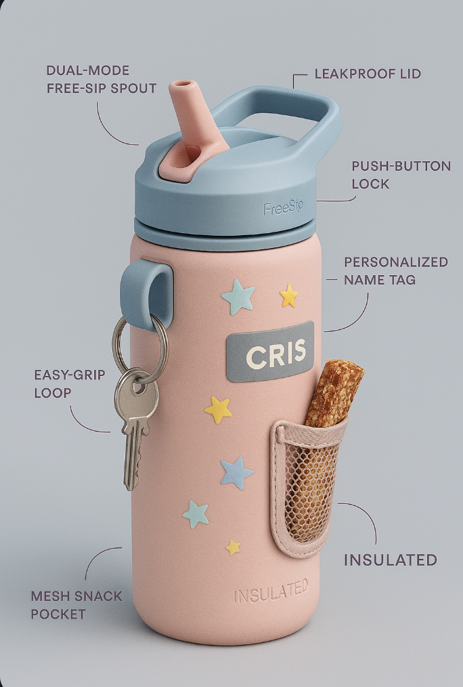

If you walk into any walmart, TJ Maxx, of Burlington, there are entire aisles dedicated to water bottles. Many aren’t by popular brands, but they vary in color, style, and size, ensuring that everytype of shopper can find something they like. Every often there a new brand emerges, taking over the scene and attracting purchases frmo all different audiences. WHen I was in middle school, S’well bottles were all the rage. A few years later Hydroflask took over, and now, Stanley and Owala seem to be th emost popular. What makes people switch from a reliable brand to another? Is it a more convenient shape, is it easier to clean, or is it just the desire to be on trend? Let’s see if AI can help me design a water bottle that has all the features to attract diverse customers and maintain long-term popularity when new competitors emerge!
Prompt:
What features on a water bottle are likely to attract diverse consumer segments
Response:
Features that attract diverse consumer segments to water bottles include sustainability, personalization, functionality, and inclusive design. These elements cater to varying lifestyles, values, and aesthetic preferences.
🌍 Sustainability & Eco-Conscious Design - Reusable and recyclable materials: Stainless steel, BPA-free plastic, glass, or bamboo appeal to eco-conscious users. - Biodegradable or compostable packaging: Adds value for environmentally aware buyers. - Carbon-neutral or ethical production: Brands like Hydro Flask emphasize sustainability to build loyalty.
🎨 Personalization & Style - Color variety and patterns: Bright, pastel, or minimalist palettes appeal to different age groups and style preferences. - Customizable options: Names, stickers, or modular parts allow users to express identity. - Collaborations with artists or influencers: Attract trend-driven or niche communities.
🧠 Smart & Functional Features - Temperature control: Insulated bottles that keep drinks hot or cold are popular across demographics. - Built-in filters or infusers: Appeal to health-conscious users or travelers. - Smart hydration tracking: Tech-savvy users appreciate bottles that sync with apps or glow to remind them to drink.
I expected features to be indicators of a good water bottle, but while the trending Owala bottle has many of these characteristics, the Stanley cup, also popular across consumer segments, does not. So why were these bottles equally as popular?
🔥 Stanley’s Rise to Fame TikTok virality: Stanley’s Quencher tumbler exploded in popularity thanks to influencers and lifestyle creators showcasing it in “day-in-my-life” and “hydration haul” videos. - Aesthetic appeal: Its soft pastel colors, sleek design, and large size made it a fashion accessory as much as a hydration tool. - Emotional branding: Stanley leaned into aspirational lifestyle marketing—positioning the tumbler as a symbol of wellness, productivity, and self-care. - Retail scarcity: Limited drops and exclusive colors at Target and Starbucks created hype and urgency.
🌈 Owala’s Disruption Functional innovation: Owala’s FreeSip lid lets users choose between sipping through a straw or swigging from the spout—solving a real-world hydration problem.
- Leakproof design: Teens and parents alike praised its reliability and ease of use, especially for school and sports.
- Bold, playful colors: Owala’s vibrant, contrasting palettes appealed to younger consumers seeking individuality and fun.
- Gen Z cool factor: Owala quickly became the “it bottle” in school hallways and social feeds, dethroning Stanley as the trend leader
Shifts in consumer trends are largely attributed to cyclical microtrends and generational preferences. Is it possible to create a water bottle that will withstand the cyclical clock of trends and that will be attractive to all consumers?
Prompt:
help me identify features I can include in a new bottle brand that is attractive to all types of consumers: athletes, parents, kids, etc.
Response:
🧠 Functional Innovation
- Dual drinking modes: Like Owala’s FreeSip, offer both straw and spout options for versatility.
- Leakproof lids: Crucial for school bags, gym gear, and travel.
- One-handed operation: Flip-top or push-button lids help athletes and multitasking parents.
- Wide-mouth opening: Easy to clean and add ice or fruit infusions.
🧊 Temperature Control & Durability - Double-wall insulation: Keeps drinks cold for 24+ hours or hot for 12+—ideal for sports, school, and work. - Impact-resistant materials: Stainless steel or Tritan plastic withstands drops and rough use. - Dishwasher-safe components: Simplifies cleaning for busy families.
🧒 Inclusive & Age-Friendly Design - Ergonomic grip and handles: Easy for small hands, seniors, and athletes. - Size variety: Offer 12oz for toddlers, 20oz for kids, and 32–64oz for adults and athletes. - Non-toxic materials: BPA-free, lead-free, and phthalate-free for health-conscious parents.
🎨 Personalization & Style - Color and pattern diversity: Pastels, bold brights, neutrals, and limited-edition prints. - Customizable name tags or stickers: Great for kids and gifting. - Collabs with artists or influencers: Boosts trend appeal and social media traction.
🌍 Sustainability & Ethics - Recycled or biodegradable materials: Appeals to eco-conscious consumers. - Ethical sourcing and carbon-neutral shipping: Builds brand trust and loyalty.
📱 Smart Features - Hydration tracking: Sync with apps or use LED reminders to encourage regular drinking. - Modular accessories: Add-ons like filter caps, snack compartments, or carabiner clips.
Let’s see a prototype

Prompt: Can we add holders on the side for things like a key ring, or a pocket for snacks
